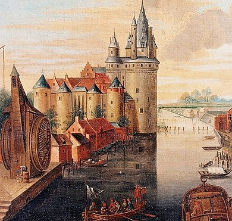

Kortrijk is een van de oudste steden van België. In de eerste eeuw na Christus ontstond Kortrijk als de Gallo-Romeinse vicus Cortoriacum. Deze nederzetting lag aan het kruispunt van de heirbaan Boulogne-Tongeren en de heirbaan Doornik-Oudenburg en langs de oevers van de Leie. In 1950 kwamen bij opgravingen Romeinse vondsten aan het licht waaruit deskundigen opmaakten dat de Romeinen Kortrijk gebruikten als uitvalsbasis voor de verovering van Brittannië in 43 na Christus.
